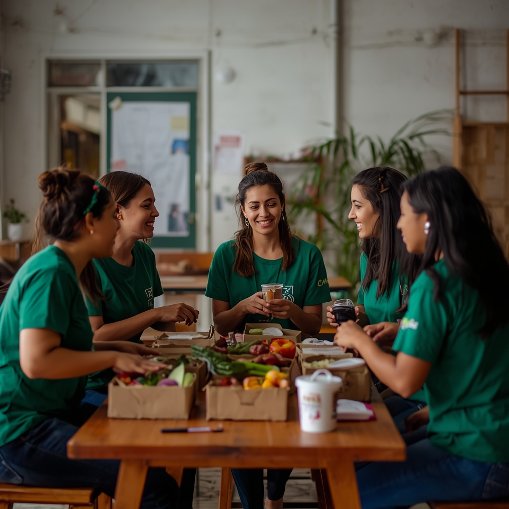
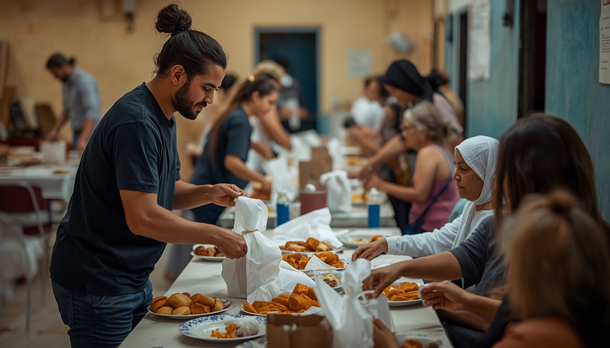
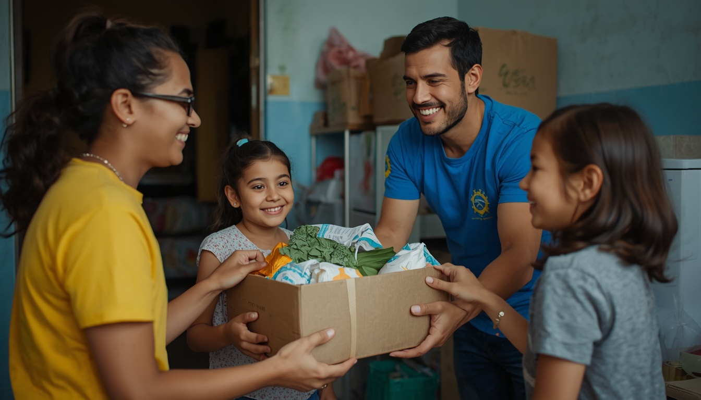
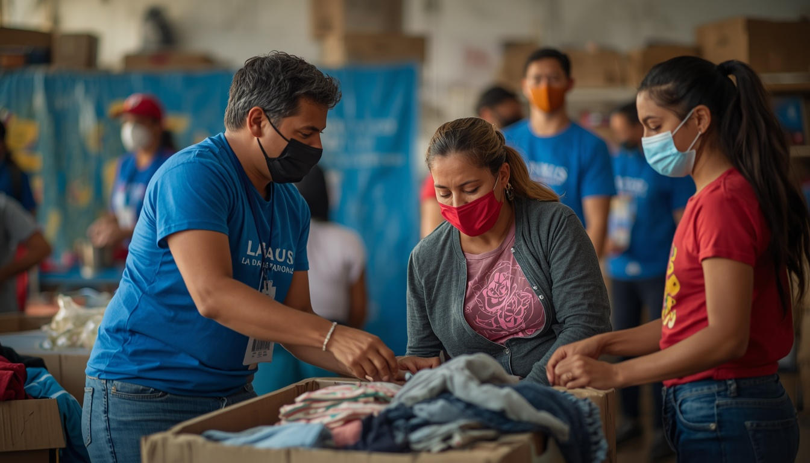

-

NOTÍCIA
Solidariedade que transforma vidas.
Conectamos doadores, voluntários e ONGs para um mundo melhor.
-

NOTÍCIA
Voluntariado com impacto positivo
Descubra como o voluntariado pode criar mudanças significativas em nossas comunidades.
-

NOTÍCIA
Voluntários transformam vidas com ações solidárias
Projetos locais mobilizam pessoas para apoiar comunidades em momentos de necessidade.
-

NOTÍCIA
Campanha de inverno arrecada 2 toneladas de alimentos
Uma ação coletiva fortalece a ajuda às famílias e amplia o impacto da solidariedade.
Notícias
-
Campanha de inverno arrecada 2 toneladas de alimentos
7 de outubro de 2026
-
Voluntários transformam vidas com ações solidárias
15 de outubro de 2026
Destaques
-
12
NOV
Doação de roupas e cobertores
Vila Mariana - São Paulo/SP
14h às 17h
12 Voluntários confirmados
-
27
DEZ
Entrega de cestas básicas
Jardim da Saúde - São Paulo/SP
08h às 11h
18 Voluntários confirmados
-
03
SET
Ação de higiene e limpeza
Centro - Santos/SP
10h às 13h
08 Voluntários confirmados